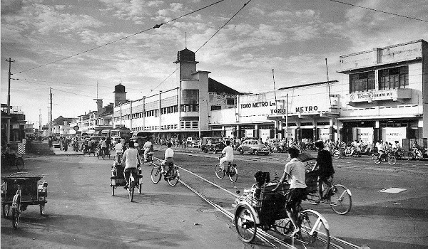

Sejarah Kota Bekasi

Dayeuh Sundasembawa atau Jayagiri, itulah sebutan Bekasi tempo dulu sebagai Ibukota Kerajaan Tarumanagara. Luas Kerajaan ini mencakup wilayah Bekasi, Sunda Kelapa, Depok, Cibinong, Bogor hingga ke wilayah Sungai Cimanuk di Indramayu.
Menurut para ahli sejarah dan fisiologi, letak Dayeuh Sundasembawa atau Jayagiri sebagai Ibukota Tarumanagara adalah di wilayah Bekasi sekarang. Dayeuh Sundasembawa inilah daerah asal Maharaja Tarusbawa (669-723 M) pendiri Kerajaan Sunda dan seterusnya menurunkan Raja-Raja Sunda sampai generasi ke-40 yaitu Ratu Ragumulya (1567-1579 M).
Wilayah Bekasi tercatat sebagai daerah yang banyak memberi informasi tentang keberadaan Tatar Sunda pada masa lampau. Diantaranya dengan ditemukannya 4 prasasti yang dikenal dengan nama Prasasti Kebantenan. Keempat prasasti ini merupakan keputusan dari Sri Baduga Maharaja (Prabu Siliwangi, Jaya Dewa) yang ditulis dalam 5 lembar lempeng tembaga.
Sejak abad ke-5 Masehi pada masa Kerajaan Tarumanagara, abad ke-8 Kerajaan Galuh, dan Kerajaan Pajajaran pada abad ke-14, Bekasi menjadi wilayah kekuasaan karena merupakan salah satu daerah strategis, yakni sebagai penghubung antara Pelabuhan Sunda Kelapa (Jakarta).
Sejarah Sebelum Tahun 1949
Kota Bekasi ternyata mempunyai sejarah yang sangat panjang dan penuh dinamika. Ini dapat dibuktikan perkembangannya dari zaman ke zaman, sejak zaman Hindia Belanda, pendudukan militer Jepang, perang kemerdekaan dan zaman Republik Indonesia.
Di zaman Hindia Belanda, Bekasi masih merupakan Kewedanaan (District), termasuk Regenschap (Kabupaten) Meester Cornelis. Saat itu kehidupan masyarakatnya masih dikuasai oleh para tuan tanah keturunan Tionghoa.
Kondisi ini terus berlanjut sampai pendudukan militer Jepang. Pendudukan militer Jepang turut mengubah kondisi masyarakat saat itu. Jepang melaksanakan Japanisasi di semua sektor kehidupan. Nama Batavia diganti dengan nama Jakarta. Regenschap Meester Cornelis menjadi KEN Jatinegara yang wilayahnya meliputi Gun Cikarang, Gun Kebayoran dan Gun Matraman.
Setelah proklamasi kemerdekaan Republik Indonesia tanggal 17 Agustus 1945, struktur pemerintahan kembali berubah, nama Ken menjadi Kabupaten, Gun menjadi Kewedanaan, Son menjadi Kecamatan dan Kun menjadi Desa atau Kelurahan. Saat itu Ibukota Kabupaten Jatinegara selalu berubah-ubah, mula-mula di Tambun, lalu ke Cikarang, kemudian ke Bojong (Kedung Gede).
Pada waktu itu Bupati Kabupaten Jatinegara adalah Bapak Rubaya Suryanaatamirharja. Tidak lama setelah pendudukan Belanda, Kabupaten Jatinegara dihapus, kedudukannya dikembalikan seperti zaman Regenschap Meester Cornelis menjadi Kewedanaan.
Kewedanaan Bekasi masuk ke dalam wilayah Batavia en Omelanden. Batas Bulak Kapal ke Timur termasuk wilayah negara Pasundan dibawah Kabupaten Karawang, sedangkan sebelah Barat Bulak Kapal termasuk wilayah negara Federal sesuai Staatsblad van Nederlandsch Indie 1948 No.178 Negara Pasundan.
Sejarah Tahun 1949 sampai Terbentuknya Kota Bekasi
Sejarah setelah tahun 1949, ditandai dengan aksi unjuk rasa sekitar 40.000 rakyat Bekasi pada tanggal 17 Februari 1950 di Alun-Alun Bekasi. Hadir pada acara tersebut Bapak Mu’min sebagai Residen Militer Daerah V. Inti dari unjuk rasa tersebut adalah penyampaian pernyataan sikap sebagai berikut:
"Rakyat bekasi mengajukan usul kepada Pemerintah Pusat agar Kabupaten Jatinegara diubah menjadi Kabupaten Bekasi. Rakyat Bekasi tetap berdiri dibelakang Pemerintah Negara Kesatuan Republik Indonesia."
Dan berdasarkan Undang-Undang Nomor 14 Tahun 1950 terbentuklah Kabupaten Bekasi, dengan wilayah terdiri dari 4 kewedanaan, 13 kecamatan (termasuk Kecamatan Cibarusah) dan 95 desa. Angka-angka tersebut secara simbolis diungkapkan dalam lambang Kabupaten Bekasi dengan motto "SWATANTRA WIBAWA MUKTI".
Pada tahun 1960 Kantor Kabupaten Bekasi berpindah dari Jatinegara ke Kota Bekasi (Jl. Ir H. Juanda, Kota Bekasi). Kemudian pada tahun 1982, saat Bupati dijabat oleh Bapak H. Abdul Fatah Gedung Perkantoran Pemerintah Daerah Kabupaten Bekasi kembali dipindahkan ke Jl. Ahmad Yani No.1, Kabupaten Bekasi.
Pasalnya perkembangan Kecamatan Bekasi menuntut dimekarkannya Kecamatan Bekasi menjadi Kota Administratif Bekasi yang terdiri atas 4 kecamatan berdasarkan Peraturan Pemerintah Nomor 48 Tahun 1981, yaitu Kecamatan Bekasi Timur, Kecamatan Bekasi Selatan, Kecamatan Bekasi Barat dan Kecamatan Bekasi Utara, yang seluruhnya menjadi 18 kelurahan dan 8 desa.
Peresmian Kota Administratif Bekasi dilakukan oleh Menteri Dalam Negeri pada tanggal 20 April 1982, dengan walikota pertama dijabat oleh Bapak H. Soedjono (1982-1988). Tahun 1988 Walikota Bekasi dijabat oleh Bapak Drs. Andi Sukardi hingga tahun 1991 (1988-1991, kemudian diganti oleh Bapak Drs. H. Khailani AR hingga tahun (1991-1997)
Pada Perkembangannya Kota Administratif Bekasi terus bergerak dengan cepat. Hal ini ditandai dengan pertumbuhan penduduk yang cukup tinggi dan roda perekonomian yang semakin bergairah. Sehingga status Kota Administratif, Bekasi pun kembali di tingkatkan menjadi Kotamadya (sekarang "Kota") melalui Undang-Undang Nomor 9 Tahun 1996.